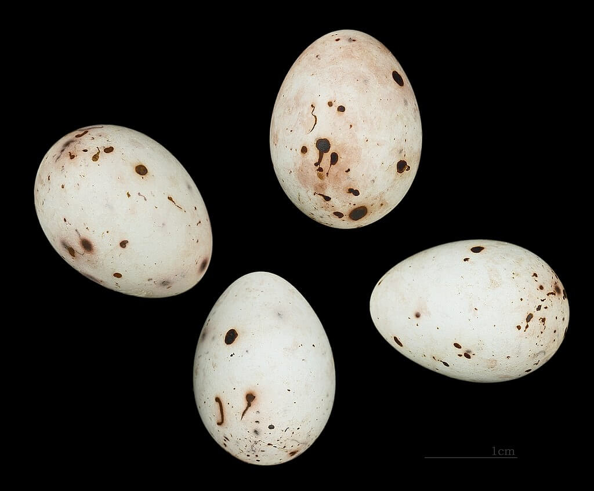
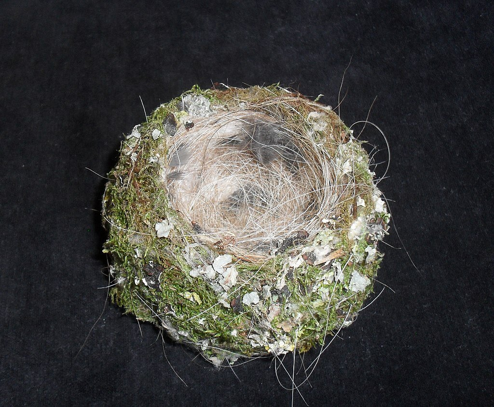

Обыкновенный зяблик или просто зяблик (Fringilla coelebs) - обычная и широко распространенная мелкая воробьиная птица семейства вьюрковых. Самец ярко окрашен сине-серой шапкой и ржаво-красной нижней частью. Окраска самки более приглушенная, но оба пола имеют две контрастные белые полосы крыла и белые стороны хвоста. Самец птицы имеет сильный голос и поет с открытых окуней, чтобы привлечь партнера.
Зяблик гнездится на большей части Европы, от Палеарктики до Сибири и в северо-западной Африке. Самка строит гнездо с глубокой чашечкой в развилке дерева. Кладка обычно состоит из четырех или пяти яиц, которые вылупляются примерно через 13 дней. Птенцы оперяются примерно через 14 дней, но кормятся обоими взрослыми в течение нескольких недель после выхода из гнезда. Вне сезона размножения зяблики образуют стаи на открытой местности и добывают семена на земле. Во время сезона размножения они кормятся на деревьях беспозвоночными, особенно гусеницами, и кормят ими своих детенышей. Они являются частичными мигрантами; птицы, размножающиеся в теплых регионах, ведут оседлый образ жизни, в то время как птицы, размножающиеся в более холодных северных районах их ареала, зимуют дальше на юг.
Яйца и птенцы зяблика берутся различными хищниками млекопитающих и птиц. Его большое количество и огромный диапазон означают, что зяблики классифицируются Международным союзом охраны природы как наименее обеспокоенные.
-
Содержание:
- 1. Таксоновия
- 2. Описание
- 3. Распространение и среда обитания
- 4. Поведение
- 5. Хищники и паразиты
- 6. Статус
- 7. Отношение к людям
Таксономия
Обыкновенный зяблик был описан шведским натуралистом Карлом Линнеем в 1758 году в 10-м издании его Systema Naturae под его нынешним биномиальным названием. Fringilla - латинское слово для зяблика, в то время как caelebs означает неженатый или холостой. Линней заметил, что во время шведской зимы только самки птиц мигрировали на юг через Бельгию в Италию.
Английское название происходит от древнеанглийского ceaffinc, где ceaf - "мякина", а finc - "зяблик". Зяблики, вероятно, получили это имя, потому что после того, как фермеры обмолотили свой урожай, эти птицы иногда проводят недели, выбирая кучи выброшенной мякины для зерна. Зяблик - одна из многих птиц, изображенных на полях английского иллюстрированного манускрипта XV века "Шерборн Миссал". Английский натуралист Уильям Тернер описал обыкновенного зяблика в своей книге о птицах Avium praecipuarum, опубликованной в 1544 году. Хотя текст написан на латыни, Тернер дает английское название chaffinche и перечисляет два народных имени: sheld-appel и spink. Слово sheld является диалектным словом, означающим пестрый или разноцветный (как в shelduck). Appel может быть связано с Alp, устаревшим словом для обозначенияснегирь. Название спинк, вероятно, происходит от ноты зова птицы. Имена spink и shell apple являются одними из многих народных имен, перечисленных для обыкновенного зяблика преподобным Чарльзом Суэйнсоном в его провинциальных именах и народных знаниях британских птиц (1885).
Fringillidae - все семеноеды с толстыми коническими клювами. Они имеют сходную морфологию черепа, девять больших первичных, 12 хвостовых перьев и без урожая. У всех видов самка строит гнездо, высиживает яйца и выводит детенышей. Зяблики делятся на два подсемейства: Carduelinae, содержащие около 28 родов с 141 видом, и Fringillinae, содержащие один род Fringilla с четырьмя видами: обыкновенный зяблик (F. coelebs), гран-канарский синий зяблик (F. polatzeki), тенерифский синий зяблик (F. teydea) и ежевика (F. montifringilla). Бахромчатые вьюрки выращивают своих детенышей почти исключительно на членистоногих, в то время как кардуэлинские вьюрки выращивают своих детенышей на срыгнутых семенах.
Подвид
Описан ряд подвидов обыкновенного зяблика, основанных главным образом на различиях в рисунке и цвете оперения взрослого самца. Подвид можно разделить на три группы: "coelebs group", которая встречается в Европе и Азии, "spondiogenys group" в Северной Африке и "canariensis group" на Канарских островах. Подвид с Мадейры и Азорских островов помещен либо в "canariensis group". или в "группе spondiogenys". Генетические исследования показывают, что члены "группы coelebs" и "группы spondiogenys" более тесно связаны друг с другом, чем с членами "группы canariensis".
В пределах "группы spondiogenys" постепенное клинальное изменение в большом географическом диапазоне и обширная интерградация означают, что географические пределы и принятие различных подвидов варьируются между властями. Международный союз орнитологов перечисляет 11 подвидов из этой группы[16], тогда как Питер Клемент в "Птицах мира" перечисляет семь и рассматривает особенности подвидов balearica (Майорка), caucasica (южный Кавказ), schiebeli (южная Греция, Крит и западная Турция) и tyrrhenica (Корсика) подпадать под варьирование номинируемого подвида. Он также предполагает, что подвиды alexandrovi, sarda, solomkoi и syriaca могут представлять собой вариации номинантного подвида.
Авторы молекулярно-филогенетического исследования 2009 года трех подвидов, признанных на Канарских островах, пришли к выводу, что они достаточно различны как по генотипу, так и по фенотипу, чтобы рассматриваться как отдельные виды в пределах рода Fringilla. Они также предложили пересмотренное распределение подвида на островах, в котором птицы на Ла-Пальме (palmae) и Эль-Йерро (ombrioso) сгруппированы вместе как один подвид, в то время как нынешний подвид canariensis разделен на два, причем один подвид встречается только на Гран-Канарии, а другой на Ла-Гомереи Тенерифе. Результаты исследования, опубликованного в 2018 году, подтвердили более ранние выводы. Ранее авторы описывали разновидность Гран-Канарии как подвид и придумали триномиальное название Fringilla coelebs bakeri.
Целебная группа
- Zarudny F. c. alexandrovi, 1916 – северный Иран
- F. c. caucasica Serebrovski, 1925 – Балканы и северная Греция до северной Турции, центральный и восточный Кавказ и северо-западный Иран
- Linnaeus F. c. coelebs, 1758 (номинатный подвид) – Евразия, от Западной Европы и Малой Азии до Сибири
- F. c. balearica von Jordans, 1923 – Пиренейский полуостров и Балеарские острова
- O. Kleinschmidt F. c. gengleri, 1909 – British Isles
- F. c. sarda Rapine, 1925 – Сардиния
- Erwin Stresemann F. c. schiebeli, 1925 – южная Греция, Крит и западная Турция
- Menzbier F. c. solomkoi & Sushkin, 1913 – Крымский полуостров и юго-западный Кавказ
- F. c. syriaca J. M. Harrisson, 1945 – Кипр, юго-восточная Турция до северного Ирана и Иордании
- Zarudny F. c. transcaspia, 1916 – северо-восточный Иран и юго-западный Туркменистан
- F. c. tyrrhenica Schiebel, 1910 – Corsica
Группа 'spondiogenys'
- J. Levaillant F. c. africana, 1850 – от Марокко до северо-запада Туниса, северо-востока Ливии
- Bonaparte F. c. spodiogenys, 1841 – Восточный Тунис и северо-западная Ливия: Атласский зяблик
Группа 'canariensis'
- Vieillot F. c. canariensis, 1817 – центральные Канарские острова (Ла Гомера, Тенерифе и Гран-Канария)
- F. c. bakeri Illera et al., 2018 – центральные Канарские острова (Гран-Канария)
- Sharpe F. c. maderensis, 1888 – Madeira: Madeiran chaffinch
- Pucheran F. c. moreletti, 1859 – Азорские острова
- Hartert F. c. ombriosa, 1913 – Эль-Йерро, Канарские острова
- Tristram F. c. palmae, 1889 – Ла-Пальма, Канарские острова: La Palma chaffinch
Описание
Обыкновенный зяблик имеет длину около 14,5 см (5,7 дюйма), размах крыльев 24,5–28,5 см (9,6–11,2 дюйма) и вес 18-29 г (0,63–1,02 унции). Взрослый самец номинантного подвида имеет черный лоб и сине-серую макушку., затылок и верхняя мантия. Крестец светло-оливково-зеленый; нижняя мантия и лопатки образуют коричневое седло. Сторона головы, горло и грудь имеют тусклый ржаво-красный цвет, сливающийся с бледным кремово-розовым на животе. Центральная пара хвостовых перьев темно-серая с черной полосой. Остальная часть хвоста черная, кроме двух внешних перьев с каждой стороны, которые имеют белые клинья. Каждое крыло имеет контрастную белую панель на кроющих и желто-белую полосу на вторичных и внутренних первичных. Маховые перья черные с белым на базальных частях лопастей. Вторичные и внутренние первичные имеют бледно-желтые полосы на внешней паутине, тогда как внешние первичные имеют белый внешний край.
После осенней линьки кончики новых перьев имеют бахрому, которая добавляет коричневый оттенок цветному оперению. Концы перьев изнашиваются за зиму, так что к весеннему сезону размножения отображаются более яркие цвета. Глаза имеют темно-коричневую радужку, а ноги серо-коричневые. Зимой клюв бледно-серый и немного темнее по верхнему гребню или кульмену, но весной клюв становится голубовато-серым с небольшим черным кончиком.
Самец подвида, обитающего на Британских островах (F. c. gengleri), очень похож на номинантный подвид, но имеет немного более темную мантию и нижнюю часть тела. Самцы двух североафриканских подвидов F. c. africana и F. c. spodiogenys имеют сине-серую корону и затылок, которые простираются вниз к бокам головы и шеи, черный лоб и лоб, сломанное белое кольцо для глаз, яркое оливково-зеленое седло и розово-горло и грудь буроватые. Самцы F. c. canariensis и F. c. palmae на Канарских островах имеют темно-синюю верхнюю часть тела и не имеют контрастной мантии. Самцы зябликов Мадейры (F. c. maderensis) и Азорских островов (F. c. moreletti) внешне похожи на F. c. canariensis, но имеют ярко-зеленую мантию.
Взрослая самка гораздо скучнее по внешнему виду, чем самец. Голова и большая часть верхней части тела имеют оттенки серо-коричневого цвета. Нижняя часть тела бледнее. Нижняя часть спины и крестец имеют тусклый оливково-зеленый цвет. Крылья и хвост похожи на крылья самца. Ювениль напоминает самку.
Голос
Самцы обычно поют два или три разных типа песен, а также существуют региональные диалекты.
Приобретение молодым обыкновенным зябликом своей песни стало предметом влиятельного исследования британского этолога Уильяма Торпа. Торп определил, что если молодой обыкновенный зяблик не подвергается воздействию песни взрослого самца в течение определенного критического периода после вылупления, он никогда не будет должным образом изучать песню. Он также обнаружил, что у взрослых обыкновенных зябликов кастрация устраняет песню, но инъекция тестостерона заставляет таких птиц петь даже в ноябре, когда они обычно молчат.
Распространение и среда обитания
Обыкновенный зяблик размножается в лесистых районах, где изотерма июля составляет от 12 до 30 ° C (54 и 86 ° F).Ареал размножения включает северо-западную Африку и большую часть Европы и простирается на восток через умеренную Азию до реки Ангара и южной оконечности озера Байкал в Сибири. Существует также ряд отличительных подвидов на Азорских островах, Канарских островах и островах Мадейра в Атлантическом океане. Обыкновенный зяблик был завезен из Великобритании на несколько ее заморских территорий во второй половине 19 века. В Новой Зеландии обыкновенный зяблик колонизировал Северные и Южные острова к 1900 году и в настоящее время является одним из наиболее распространенных и распространенных видов воробьиных. В Южной Африке очень маленькая гнездящаяся колония в пригородах Констанции, Хаут-Бей, Пайнлендс и Кэмпс-Бей в Кейптауне является единственным остатком другой такой интродукции.
Эта птица не является мигрирующей в более мягких частях своего ареала, но зимой покидает более холодные регионы. Вне сезона размножения образует рыхлые стаи, иногда смешивается с ежевикой. Он иногда забредает в восточную часть Северной Америки, хотя некоторые наблюдения могут быть беглецами.
Поведение
Размножение
Обыкновенные зяблики впервые размножаются, когда им исполняется 1 год. Они в основном моногамны, и парная связь для жилых подвидов, таких как gengleri, иногда сохраняется из года в год. Дата размножения зависит от весенней температуры и происходит раньше в юго-западной Европе и позже на северо-востоке. В Великобритании большинство кладок откладывается в период с конца апреля до середины июня. Самец привлекает самку на свою территорию песней.
Гнезда строятся исключительно самкой и обычно располагаются в развилке куста или дерева на высоте нескольких метров над землей.Гнездо имеет глубокую чашечку и выстлано слоем тонких корней и перьев. Снаружи покрыт слоем лишайника и паутинного шелка поверх внутреннего слоя мха и травы. Яйца откладываются рано утром с ежедневными интервалами до завершения кладки. Кладка обычно состоит из 4-5 яиц, гладких и слегка глянцевых, но очень изменчивых по цвету. Они варьируются от бледно-голубовато-зеленого до светло-красного с пурпурно-коричневыми пятнами, пятнами или стейками. Средний размер яйца составляет 19 мм x 15 мм (0,75 дюйма x 0,59 дюйма) при весе 2,2 г (0,078 унции). Самка высиживает яйца в течение 10-16 дней. Птенцы вылупляются почти голыми с закрытыми глазами и питаются обоими родителями, но в основном самкой, которая выводит их около шести дней. Питаются в основном гусеницами. Птенцы оперяются через 11-18 дней после вылупления и расходятся. Затем молодые птицы получают помощь в кормлении от обоих родителей в течение следующих трех недель. Родители очень редко заводят второй выводок, но когда они это делают, он всегда находится в новом гнезде. Молодые птицы подвергаются частичной линьке в возрасте около пяти недель, когда они заменяют голову, тело и многие из своих скрытых перьев, но не свои первичные и вторичные маховые перья. После размножения взрослые птицы подвергаются полной ежегодной линьке, которая длится около десяти недель.
В исследовании, проведенном в Великобритании с использованием данных восстановления колец, выживаемость подростков в первый год жизни составляла 53%, а ежегодная выживаемость взрослых - 59%. Из этих цифр типичная продолжительность жизни составляет всего 3 года, но максимальный зарегистрированный возраст это 15 лет и 6 месяцев для птицы в Швейцарии.
Кормление
Вне сезона размножения обыкновенные зяблики в основном едят семена и другой растительный материал, который они находят на земле. Они часто кормятся на открытой местности большими стаями. Обыкновенные зяблики редко берут пищу непосредственно из растений и только очень редко используют свои ноги для обработки пищи. Во время сезона размножения их рацион переключается на беспозвоночных, особенно дефолиирующих гусениц. Они питаются на деревьях, а также иногда делают короткие вылазки, чтобы поймать насекомых в воздухе. Молодые полностью питаются беспозвоночными, которые включают гусениц, тлю, уховертки, пауков и личинок (личинки жуков).
Хищники и паразиты
Яйца и птенцы обыкновенного зяблика предшествуют воронам, евразийским красным и восточным серым белкам, домашним кошкам и, вероятно, также горностаям и ласк. Кладки, начатые позже весной, меньше страдают от хищничества, что, как полагают, связано с увеличением растительности, затрудняющей поиск гнезд.В отличие от близкородственного зяблика, обыкновенный зяблик не паразитирует на обыкновенной кукушке.
Было известно, что простейший паразит Trichomonas gallinae заражает голубей и хищников, но начиная с Великобритании в 2005 году были обнаружены тушки мертвых европейских снегирей и обыкновенных зябликов, зараженных паразитом. Болезнь распространилась, и в 2008 году зараженные туши были найдены в Норвегии, Швеции и Финляндии, а год спустя - в Германии. Считается, что распространение болезни было опосредовано обыкновенными зябликами, так как большое количество птиц размножается в северной Европе и зимует в Великобритании. В Великобритании количество зараженных туш, восстанавливаемых каждый год, уменьшалось после пика в 2006 году. Наблюдалось сокращение численности европейских зябликов, но не наблюдалось значительного снижения общей численности обыкновенных зябликов. Аналогичная картина наблюдалась в Финляндии, где после прихода болезни в 2008 году произошло сокращение численности европейских зябликов, но лишь небольшое изменение численностичисленность зябликов обыкновенных.
У обыкновенных зябликов могут развиваться опухоли на ступнях и ногах, вызванные вирусом папилломы Fringilla coelebs . Размер папиллом варьируется от небольшого узелка на пальце до большого роста, затрагивающего как стопу, так и ногу. Заболевание встречается редко: в исследовании 1973 года, проведенном в Нидерландах, из 25 000 обследованных зябликов только 330 имели папилломы.
Статус
Обыкновенный зяблик имеет обширный ареал, оцениваемый в 7 миллионов квадратных километров (3,7 миллиона квадратных миль), и большую популяцию, включающую, по оценкам, 130-240 миллионов размножающихся пар в Европе. Учитывая размножение птиц в Азии, общая численность составляет от 530 до 1400 миллионов особей. Нет никаких свидетельств какого-либо серьезного общего снижения численности, поэтому вид классифицирован Международным союзом охраны природы как наименее опасный.
Эндемичный подвид на Макаронезийских островах в Атлантике уязвим к потере среды обитания, особенно F. c. ombriosa на Эль-Йерро на Канарских островах, где гнездящаяся популяция составляет от 1000 до 5000 пар.
Отношение к людям
Обыкновенный зяблик когда-то был популярен как певчая птица в клетке, и большое количество диких птиц было поймано и продано. В конце 19 века отлов даже истощил численность птиц в лондонских парках. В 1882 году английский издатель Сэмюэл Орчарт Битон выпустил руководство по уходу за птицами в клетках и включил рекомендацию: "Родителям и опекунам, страдающим угрюмым и угрюмым мальчиком, мой совет: купите ему зяблика". Проводились соревнования, где делались ставки накакой зяблик в клетке повторит свою песню наибольшее количество раз? Птиц иногда ослепляли раскаленной иглой, полагая, что это побуждает их петь. Эта практика является предметом стихотворения "Ослепленная птица" английского автора Томаса Харди, в котором жестокость, связанная с ослеплением птиц, контрастирует с их жизнерадостной песней. В Великобритании практика содержания обыкновенных зябликов в качестве домашних животных прекратилась после того, как отлов диких птиц был объявлен вне закона Законами о защите диких птиц 1880-1896 годов.
Обыкновенный зяблик до сих пор является популярной домашней птицей в некоторых европейских странах. В Бельгии традиционный вид спорта vinkenzetting ямы самцов обыкновенных зябликов друг против друга в конкурсе на наибольшее количество звонков птиц в час.